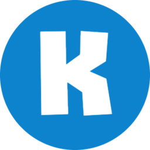
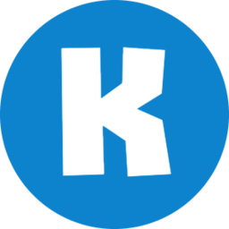
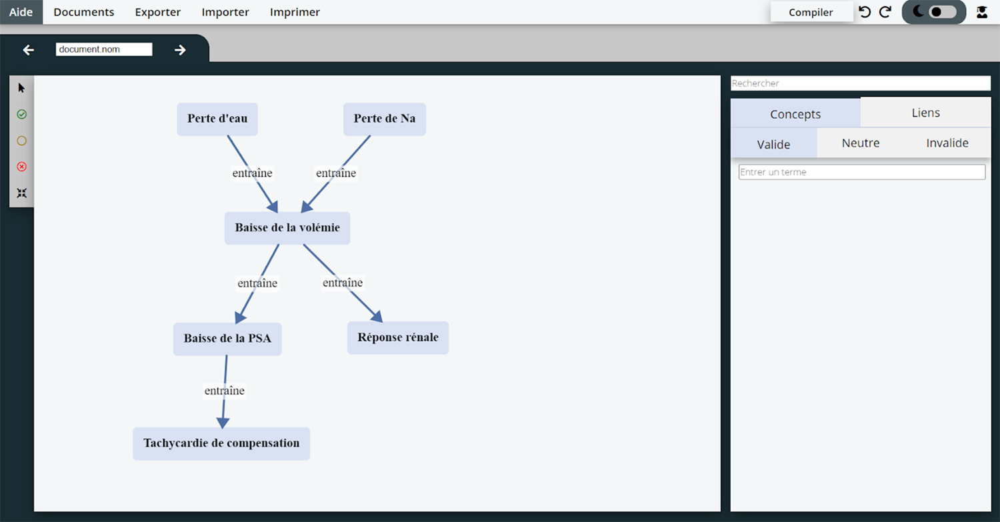

Projets universitaires
Concept Mapping Tool (Octobre 2020 - Mars 2021)
Objectif : Développer un outil en ligne d'aide à la correction de cartes conceptuelles, en ayant à la fois une partie saisie de carte et une partie correction, avec un algorithme de prétaitement des cartes pour faciliter leur correction.
Contexte : Groupe de six membres, projet de Master 2 Informatique (spécialité Intelligence Artificielle et Reconnaissance des Formes) à l'Université Paul Sabatier.
Outils :

 



Note finale : 14,5/20

Made with by Benoît Pannetier © 2022
Finding Space by Takahiro Sakamoto